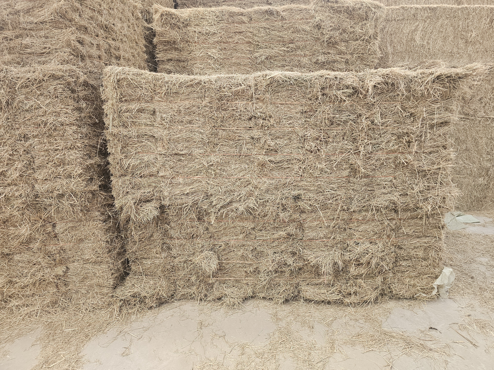
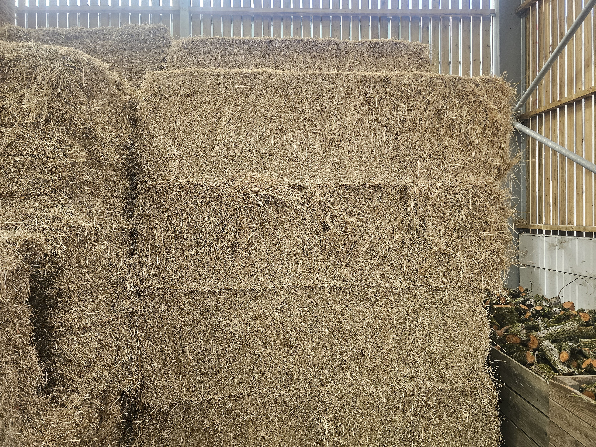
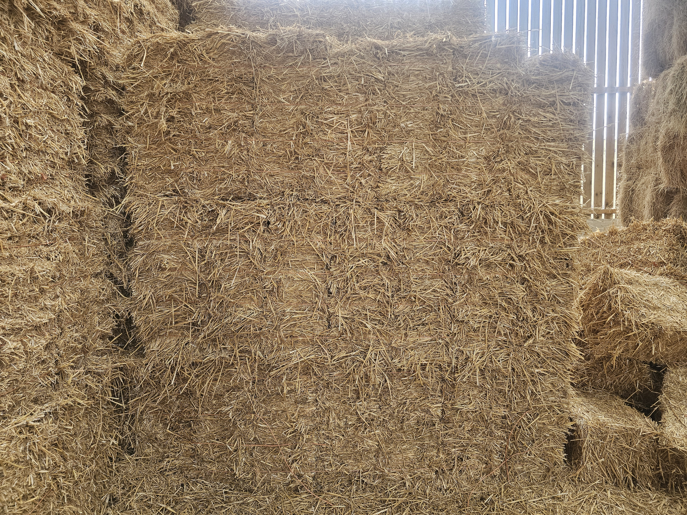
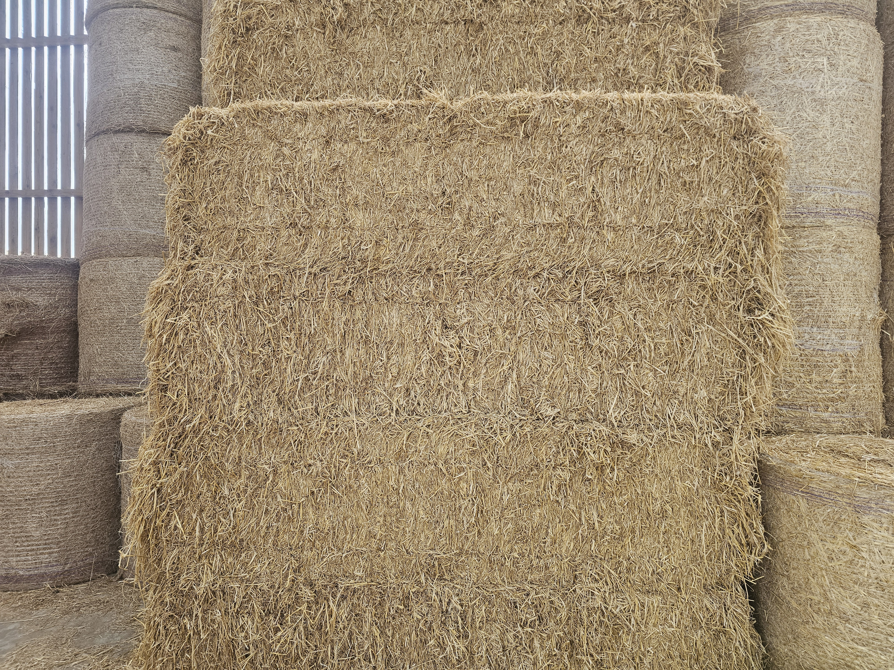

Round Hay Bale

We offer a mix of 3ft, 4ft, and 5ft round Hay bales.
We offer a mix of 3ft, 4ft, and 5ft round Hay bales.

Each pack contains 21 conventinal bales of hay all tied together into one neat pack. Making them easy to store, and easy to handle.

We offer 8ft long heston hay bales, "4 Stringers".

We offer a mix of 3ft, 4ft, and 5ft round Straw bales.

Each pack contains 21 conventinal bales of straw all tied together into one neat pack. Making them easy to store, and easy to handle.

We offer 8ft long heston straw bales, "4 Stringers".

We offer a mix of 3ft, 4ft, and 5ft round Haylage bales. Wrapped in plastic to seal the grass from the air.